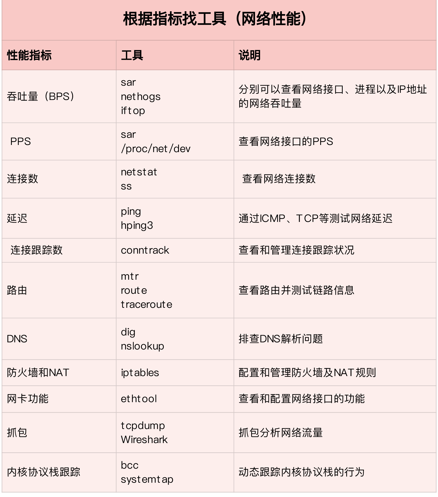
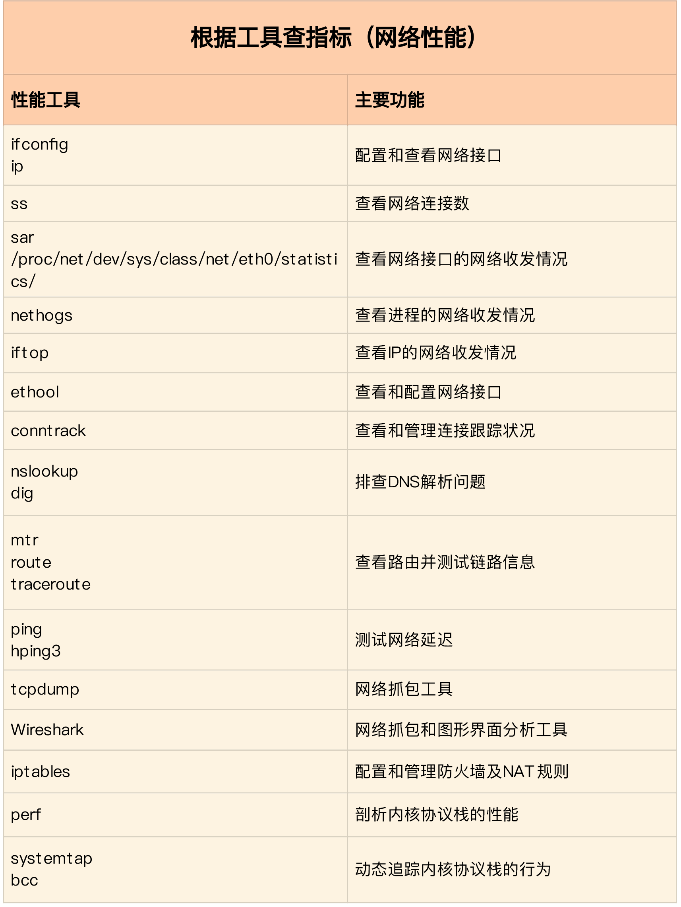
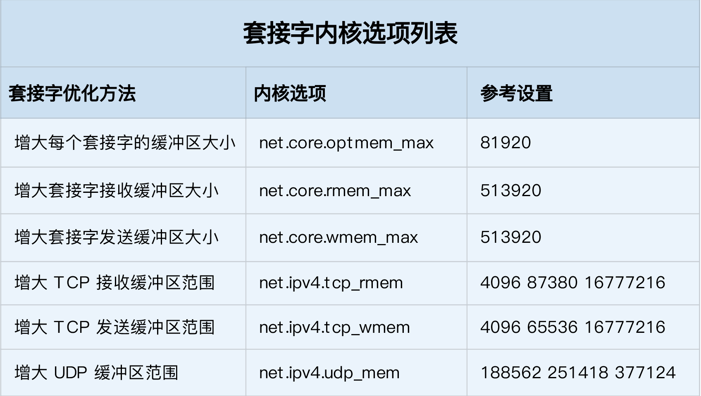

NAT 基于 Linux 内核的连接跟踪机制，实现了 IP 地址及端口号重写的功能，主要被用来解决公网 IP 地址短缺的问题。
在分析 NAT 性能问题时，可以先从内核连接跟踪模块 conntrack 角度来分析，比如用 systemtap、perf、netstat 等工具，以及 proc 文件系统中的内核选项，来分析网络协议栈的行为；然后，通过内核选项调优、切换到无状态 NAT、使用 DPDK 等方式，进行实际优化。
确定优化目标
优化前，我会先问问自己，网络性能优化的目标是什么？换句话说，我们观察到的网络性能指标，要达到多少才合适呢？

在进行基准测试时，我们就可以按照协议栈的每一层来测试。由于底层是其上方各层的基础，底层性能也就决定了高层性能。所以我们要清楚，底层性能指标，其实就是对应高层的极限性能。我们从下到上来理解这一点。
首先是网络接口层和网络层，它们主要负责网络包的封装、寻址、路由，以及发送和接收。每秒可处理的网络包数 PPS，就是它们最重要的性能指标（特别是在小包的情况下）。你可以用内核自带的发包工具 pktgen ，来测试 PPS 的性能。
再向上到传输层的 TCP 和 UDP，它们主要负责网络传输。对它们而言，吞吐量（BPS）、连接数以及延迟，就是最重要的性能指标。你可以用 iperf 或 netperf ，来测试传输层的性能。
不过要注意，网络包的大小，会直接影响这些指标的值。所以，通常，你需要测试一系列不同大小网络包的性能。
最后，再往上到了应用层，最需要关注的是吞吐量（BPS）、每秒请求数以及延迟等指标。你可以用 wrk、ab 等工具，来测试应用程序的性能。
网络性能工具
第一个维度，从网络性能指标出发，你更容易把性能工具同系统工作原理关联起来，对性能问题有宏观的认识和把握。这样，当你想查看某个性能指标时，就能清楚知道，可以用哪些工具。

第二个维度，从性能工具出发。这可以让你更快上手使用工具，迅速找出想要观察的性能指标。特别是在工具有限的情况下，我们更要充分利用好手头的每一个工具，用少量工具也要尽力挖掘出大量信息。

网络性能优化
先要获得网络基准测试报告，然后通过相关性能工具，定位出网络性能瓶颈。再接下来的优化工作，就是水到渠成的事情了。
可以从应用程序、套接字、传输层、网络层以及链路层等几个角度，分别来看网络性能优化的基本思路。
应用程序
应用程序的优化，主要就是对网络 I/O 和进程自身的工作模型的优化。
从网络 I/O 的角度来说，主要有下面两种优化思路。
- 第一种是最常用的 I/O 多路复用技术 epoll，主要用来取代 select 和 poll。这其实是解决 C10K 问题的关键，也是目前很多网络应用默认使用的机制。
- 第二种是使用异步 I/O（Asynchronous I/O，AIO）。AIO 允许应用程序同时发起很多 I/O 操作，而不用等待这些操作完成。等到 I/O 完成后，系统会用事件通知的方式，告诉应用程序结果。不过，AIO 的使用比较复杂，你需要小心处理很多边缘情况。
而从进程的工作模型来说，也有两种不同的模型用来优化。
- 第一种，主进程 + 多个 worker 子进程。其中，主进程负责管理网络连接，而子进程负责实际的业务处理。这也是最常用的一种模型。
- 第二种，监听到相同端口的多进程模型。在这种模型下，所有进程都会监听相同接口，并且开启 SO_REUSEPORT 选项，由内核负责，把请求负载均衡到这些监听进程中去。
除了网络 I/O 和进程的工作模型外，应用层的网络协议优化，也是至关重要的一点。我总结了常见的几种优化方法。
- 使用长连接取代短连接，可以显著降低 TCP 建立连接的成本。在每秒请求次数较多时，这样做的效果非常明显。
- 使用内存等方式，来缓存不常变化的数据，可以降低网络 I/O 次数，同时加快应用程序的响应速度。
- 使用 Protocol Buffer 等序列化的方式，压缩网络 I/O 的数据量，可以提高应用程序的吞吐。
- 使用 DNS 缓存、预取、HTTPDNS 等方式，减少 DNS 解析的延迟，也可以提升网络 I/O 的整体速度。
套接字
套接字可以屏蔽掉 Linux 内核中不同协议的差异，为应用程序提供统一的访问接口。每个套接字，都有一个读写缓冲区。
- 读缓冲区，缓存了远端发过来的数据。如果读缓冲区已满，就不能再接收新的数据。
- 写缓冲区，缓存了要发出去的数据。如果写缓冲区已满，应用程序的写操作就会被阻塞。
为了提高网络的吞吐量，你通常需要调整这些缓冲区的大小。比如：
- 增大每个套接字的缓冲区大小 net.core.optmem_max；
- 增大套接字接收缓冲区大小 net.core.rmem_max 和发送缓冲区大小 net.core.wmem_max；
- 增大 TCP 接收缓冲区大小 net.ipv4.tcp_rmem 和发送缓冲区大小 net.ipv4.tcp_wmem。

几点需要注意:
- cp_rmem 和 tcp_wmem 的三个数值分别是 min，default，max，系统会根据这些设置，自动调整 TCP 接收 / 发送缓冲区的大小。
- udp_mem 的三个数值分别是 min，pressure，max，系统会根据这些设置，自动调整 UDP 发送缓冲区的大小。
当然，表格中的数值只提供参考价值，具体应该设置多少，还需要你根据实际的网络状况来确定。比如，发送缓冲区大小，理想数值是吞吐量 * 延迟，这样才可以达到最大网络利用率。
除此之外，套接字接口还提供了一些配置选项，用来修改网络连接的行为：
- 为 TCP 连接设置 TCP_NODELAY 后，就可以禁用 Nagle 算法；
- 为 TCP 连接开启 TCP_CORK 后，可以让小包聚合成大包后再发送（注意会阻塞小包的发送）；
- 使用 SO_SNDBUF 和 SO_RCVBUF ，可以分别调整套接字发送缓冲区和接收缓冲区的大小。
小结
在应用程序中，主要优化 I/O 模型、工作模型以及应用层的网络协议； 在套接字层中，主要优化套接字的缓冲区大小。